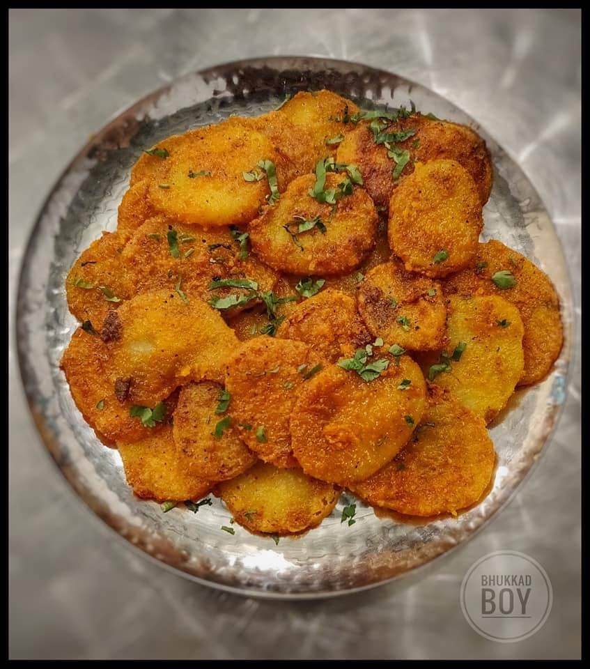

Batatyaachi kaap

Description
Batatyaachi kaap also known as Batatyacha Kaap, is a crispy Maharashtrian snack made from thinly sliced potatoes coated in a spiced rice flour batter and then pan-fried. It's a delightful combination of textures - soft potato within a light and crunchy shell - with a hint of spice for added flavor.
Ingredients
- Potatoes: The star of the dish, one large potato is enough.
- Coating:
- Rice flour: This forms the base of the crispy coating, typically 2 tablespoons.
- Wheat flour (optional): You can add 2 tablespoons of wheat flour for a slightly different texture.
- Spices: Red chili powder (2 tsp), turmeric (1 tsp), and salt (to taste) add flavor.
- Cumin seeds (Jeera): The star ingredient that gives the dish its name and flavor.
- Optional whole spices: Bay leaf,cloves, cardamom pods, cinnamon stick - these add extra depth of flavor.
- Oil: Enough oil for shallow frying the potato slices.
Steps to make
- Prepare the potatoes: Wash, peel, and thinly slice the potato. Aim for slices around 3-5 millimeters thick for even cooking.mprove texture.
- Make the coating: In a bowl, combine the rice flour, wheat flour (if using), red chili powder, turmeric, salt, and any optional additions like amchoor powder or hing. Mix well to create a dry spice mix.
- Heat the oil: Pour oil into a pan or skillet and heat it over medium heat. You want the oil hot enough for shallow frying, around 300°F (150°C).
- Coat the potatoes: Take a few potato slices at a time and coat them evenly in the dry spice mix. Make sure they are well-covered.
- Pan-fry the kaap: Gently place the coated potato slices into the hot oil.Don't overcrowd the pan. Fry for 2-3 minutes per side, or until golden brown and crispy.
- Drain and serve: Remove the fried kaap with a slotted spoon and transfer them to a paper towel-lined plate to drain excess oil. Serve hot as a snack or side dish with chutney or your favorite dipping sauce.